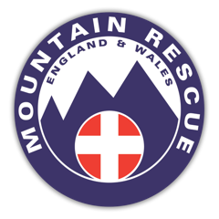
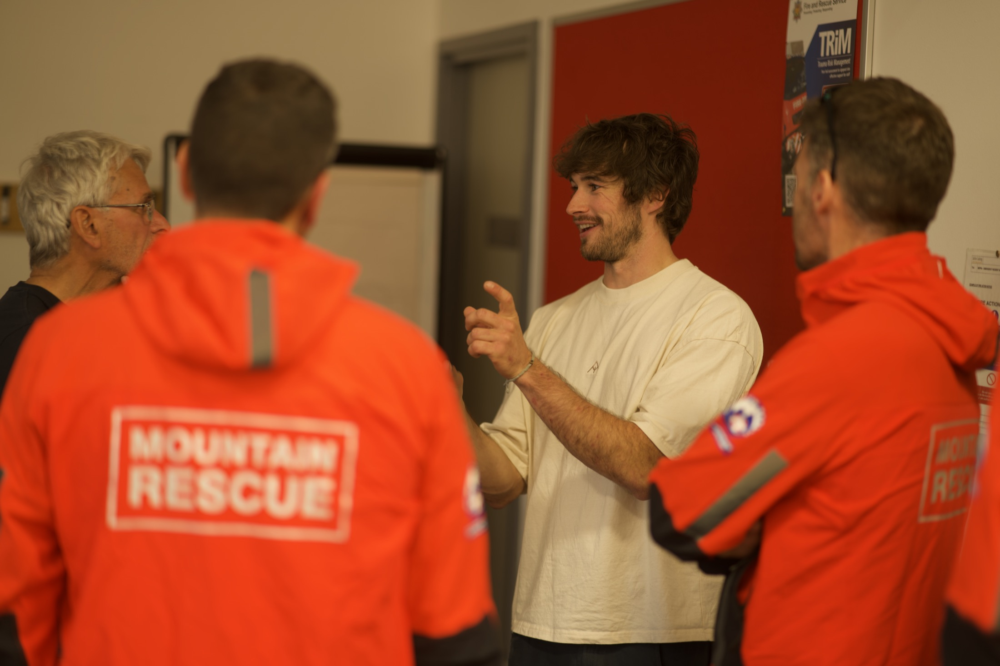
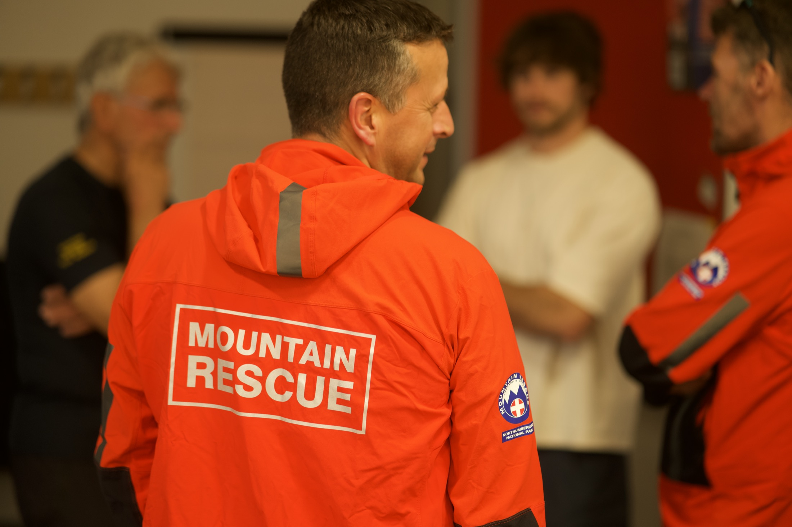
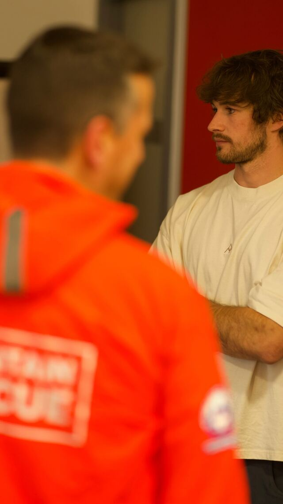

Supporting casualties, and the people who rescue them
Overview
How do you help someone who is too frightened to take in what you’re saying? What about a casualty who becomes withdrawn, angry, or repeatedly asks the same questions? And after a difficult callout, how do you look after the people who were there to help?
These were the questions at the heart of our session with Northumberland National Park Mountain Rescue Team. The talk brought together two interconnected topics: supporting casualties with heightened emotions, and building resilience to trauma among rescuers themselves.
The aim was to connect psychological understanding with practical approaches that could fit into the realities of a callout.
“Incredibly thought provoking and relevant session, thinking about the emotions of our casualties and team mates.”
— Ninette Edwards
Organisation

Northumberland National Park Mountain Rescue TeamSector
Intervention
Workshop on supporting distressed casualties, understanding responses to trauma, and building individual and team resilience
1. The Foundation
We began by looking at how emotions arise, using the cognitive model to explore the relationship between a situation, the meaning someone gives it, and their emotional and behavioural response.
An exercise invited team members to think back to a recent callout and consider four questions: what happened, what the casualty might have believed it meant, how their emotions showed up, and what happened next. This moved the discussion beyond recognising distress towards understanding what might be maintaining it.
The central shift was from seeing someone as “being difficult” to asking a different question — one that became the foundation for everything that followed.
“What state are they in, and what do they need from us next?”

2. In the Moment
Three zones of regulation gave the team a shared language for thinking about emotional states. Rather than treating these as fixed labels, we explored how someone might move between zones during a callout as pain, fatigue, uncertainty, support and their sense of control change.
Red
Someone outside their window of tolerance. That might be visible panic or agitation — but it can equally look like shutdown, detachment or withdrawal. Someone quiet is not necessarily coping well.
Yellow
Anxious, but still able to engage. The aim is to restore some agency rather than leave someone feeling like a passive passenger in their own rescue.
Green
Not a reason to stop paying attention. Psychological support includes protecting someone’s ability to cope — not only intervening once distress has escalated.
“It was really helpful to consider the zones of regulation when thinking about both casualties and ourselves.”
— Gemma H
3. The Rescuers
The second half turned towards rescuers’ own experiences. We introduced post-traumatic stress disorder — intrusive memories, avoidance, changes in mood and belief, and heightened alertness — and explored how reminders of an incident can feel immediate, and how avoidance can become part of a pattern that maintains distress.
From there, we organised the discussion around three opportunities for support.
During a callout
Rather than becoming caught in “I can’t do this” or “What if I get it wrong?”, a different question: what is the next best step? Connect it to an existing cue — touching a first-aid bag — then notice the surroundings, identify the next action, and return to the task.
After a callout
There is a difference between making space for a conversation and making someone have one. Recovery is individual, and people are ready at different times. Regular, optional check-ins work better than a one-off, compulsory discussion of everyone’s emotional experience.
Before the next one
For individuals, the four pillars of identity: work and roles, relationships, hobbies and leisure, and personal growth. For the team, making support ordinary and accessible — not something introduced only once someone is visibly struggling.
“Be your own calmest team member.”
An exercise invited participants to reflect on conversations in which they had felt genuinely heard. What had the other person done? What was missing when a conversation had felt less helpful? That led into the practical ingredients of supportive listening: being non-judgemental, reflecting back what someone has said, showing empathy, and resisting the urge to rush towards a solution.
An important boundary was made clear throughout: supportive conversations are not therapy, and ongoing distress may require professional support.

4. The Approach
Throughout the session, exercises invited the team to connect the ideas with their own experience: recognising emotions during callouts, considering useful roles for casualties and bystanders, and reflecting on what makes a supportive conversation.
The aim was not to introduce unfamiliar techniques, but to give familiar situations a clearer psychological framework.
“A very informative and engaging presentation that is very relatable to our work. It brought different perspectives to some techniques we regularly use.”
— Rich Newby
Watch
A short piece from the work with Northumberland National Park Mountain Rescue Team on supporting casualties in heightened emotional states.
Dr Fin Haley · Expedition Psychology on Instagram

Watch on Instagram
The Message
It means having tools, relationships and an environment that support people through difficult experiences.
For casualties, that starts with recognising what they need in the moment. For rescuers, it also means making space for their own responses — and knowing that support remains available after the callout is over.
Bring This To Your Team
To discuss a session on supporting distressed casualties, understanding responses to trauma, and building individual and team resilience, get in touch.